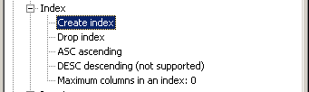

Use this command to create an index on one or more columns of a table to enhance the access of data rows on that table. An index is not a concept in the SQL standard, but it is a rather implementation defined object. Any database conforming to the 'Core ODBC level' should define the following syntax:
CREATE [UNIQUE] INDEX [schema-name.]index-name ON base-table-name( column [{ASC | DESC}] [,....] )
To see whether creating an index is supported an if the asc(ending) and desc(ending) keywords are supported, look in the ODBC Info tree under 'SQL Supported standard / Index'. If the maximum number of allowed columns in a 'create-index' statement is known, this information is also displayed. If the maximum number is unknown, then a 'zero' is displayed.

See also: DROP INDEX